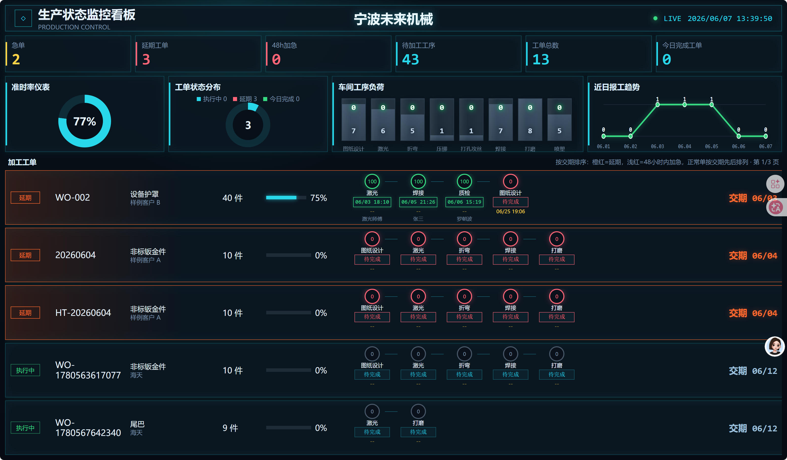

大屏看板统计与颜色逻辑说明
说明生产状态监控看板上半屏数字统计来源，以及下半屏“加工工单”板块中颜色、状态、排序和工序节点的触发规则。

图示说明：上半屏包含急单、延期工单、48h 加急、待加工工序、工单总数、今日完成工单等数字卡片，以及准时率仪表、工单状态分布、车间工序负荷、近日报工趋势。下半屏是“加工工单”明细区，颜色会根据交期紧急程度、工序完成状态、报工情况和异常状态自动变化。后续章节中的统计口径和颜色触发规则，都可以对照这张截图查看。
1. 数据来源总览
电视大屏页面 tv.html 每 15 秒请求一次后端接口 /api/tv-dashboard，接口会从本地数据库中读取订单、工单、工序路线、报工记录、异常记录、员工信息和看板设置，然后组装成大屏数据。
主要数据表
orders：订单信息，包含客户、产品、交期、优先级。workOrders：工单信息，包含工单号、计划数量、当前状态。routes：工序路线，包含工序名、派工人、状态、完成数量、完成时间、目标完成时间。reports：报工记录，包含报工人、完成数、合格数、不良数、返工数、报工时间。exceptions：异常记录，用于判断异常和处理状态。
刷新机制
- 大屏数据接口：约每 15 秒刷新一次。
- 右上角 LIVE 时间：约每 1 秒刷新一次。
- 加工工单分页：按基础设置中的轮播间隔自动翻页。
- 手机横屏大屏：访问地址带
?mobile=1时启用手机适配布局。
2. 顶部数字统计
顶部第一行的 6 个数字来自接口返回的 summary。其中“活动工单”指状态不是 已完成 的工单。
| 显示名称 | 统计口径 | 触发/计算规则 | 颜色 |
|---|---|---|---|
| 急单 | 当前未完成工单中，订单优先级为 急单 的数量。 |
activeOrders.filter(order.priority == "急单").length | 黄色，强调优先级高。 |
| 延期工单 | 当前未完成工单中，交期已经超过今天当前时间的数量。 | 系统把交期按当天 23:59:59 计算，若当前时间已经晚于该时间，则判定延期。dueDate 23:59:59 < 当前时间 |
红色，表示需要立即关注。 |
| 48h加急 | 当前未完成工单中，距离交期不足或等于 48 小时，且尚未延期的数量。 | 0 <= 交期剩余时间 <= 48小时 | 红色，提示即将到期。 |
| 待加工工序 | 所有工序中，状态为 待开始 或 暂停 的数量。 |
routes.filter(status == "待开始" 或 "暂停").length | 青色，表示待执行任务量。 |
| 工单总数 | 系统内全部工单数量，包含生产中、延期、已完成等所有状态。 | workOrders.length | 青色。 |
| 今日完成工单 | 今天完成的工单数量。 | 满足任一条件即计入：工单 completedAt 是今天；或工单状态为已完成且其中任一工序 completedAt 是今天。completedAt startsWith 今日日期 |
青色。 |
说明：这里的“今天”按服务器本地日期计算，即当天 00:00:00 到次日 00:00:00。
3. 上半屏图表统计
3.1 准时率仪表
准时率用于粗略反映当前工单交期健康度。计算方式是全部工单数量减去当前延期工单数量，再除以全部工单数量。
准时率 = round((工单总数 - 当前延期工单数) / 工单总数 × 100%)
如果系统内没有任何工单，默认显示 100%。
3.2 工单状态分布
| 图例 | 含义 | 统计规则 | 颜色 |
|---|---|---|---|
| 执行中 | 当前状态为进行中的工序数量。 | routes.status == "进行中" |
青色 |
| 延期 | 当前延期工单数量。 | 同顶部“延期工单”。 | 红色 |
| 今日完成 | 今天提交的报工记录数量。 | reports.createdAt 是今天的记录数量。 |
绿色 |
3.3 车间工序负荷
车间工序负荷固定按 9 个标准工序统计：图纸设计、激光、折弯、压铆、打孔攻丝、焊接、打磨、喷塑、组装。
| 位置 | 数字含义 | 统计规则 | 颜色含义 |
|---|---|---|---|
| 柱子上方数字 | 该工序今天完成的工序数量。 | 该工序状态为 已完成，且 completedAt 或 lastReportedAt 落在今天。 |
荧光绿色，表示今日产出。 |
| 柱子下方数字 | 该工序当前待完成数量。 | 该工序状态不是 已完成 的数量。 |
钢蓝色，表示剩余任务量。 |
柱状高度按各工序 “今日完成 + 待完成” 的最大值做比例缩放。
3.4 近7日完工工单趋势
近7日完工工单趋势展示最近 7 天每日完成工单数量，横轴为日期，节点数字为当天完成的工单数。
每日值 = 唯一完工时间 completedAt 位于当天的工单数量；旧工单缺失该字段时取最后一道已完成工序的时间
4. 加工工单排序与分页
下半屏“加工工单”只展示未完成工单，也就是状态不是 已完成 的工单。
第一步：过滤掉已完成工单，只留下当前仍需生产或处理的工单。
第二步：根据每张工单的交期计算
dueLevel：延期、48h 加急、正常。第三步：按交期时间从近到远排序。由于延期单交期已经过去，会自然排在最前。
第四步：根据屏幕高度计算每页显示几条，一页显示不下时按看板设置自动轮播。
当前代码中的排序核心是按交期时间
dueAt 升序排列；页面文案中“橙红=延期，浅红=48小时内加急，正常单按交期先后排列”对应的是展示说明。5. 工单颜色变化逻辑
| 触发条件 | 状态文字 | 整行效果 | 交期文字效果 | 说明 |
|---|---|---|---|---|
| 交期已过，且工单未完成。 | 延期 | 整行边框和左侧背景呈橙红色。 | 交期显示橙红色，并带轻微发光。 | 最高警示级别，表示已经超过交期。 |
| 距离交期小于等于 48 小时，且尚未延期。 | 加急 | 整行边框和左侧背景呈浅红色。 | 交期显示浅红色。 | 提醒主管优先关注，即将到期。 |
| 未延期，也不在 48 小时内。 | 执行中 | 正常深色背景，青色边框。 | 交期显示浅蓝灰色。 | 正常生产中的工单。 |
5.1 交期等级计算
系统把订单交期日期转为当天晚上 23:59:59，再和当前时间比较。
- 如果
交期 23:59:59 < 当前时间，判定为延期。 - 如果
交期剩余时间 <= 48 小时，判定为 48h 加急。 - 其他情况判定为正常。
5.2 进度条颜色
加工工单里的总进度条统一使用青色。宽度由所有工序完成数量占所有工序计划数量的比例决定。
工单总进度 = round(所有工序 completedQty 合计 / 所有工序 planQty 合计 × 100%)
6. 工序节点颜色逻辑
每个加工工单行中间的圆形节点代表该工单的各道工序。节点颜色由工序状态、报工情况和工单交期共同决定。
| 优先级 | 触发条件 | 节点颜色 | 完成/状态框 | 说明 |
|---|---|---|---|---|
| 1 | 工序状态为 已完成。 |
绿色圆圈。 | 完成时间框为绿色。 | 最高优先级；即使工单延期，已完成工序仍显示绿色。 |
| 2 | 工序状态为 异常 或 返工。 |
红色圆圈。 | 状态框为红色。 | 表示该工序有问题，需要处理。 |
| 3 | 工单已延期，且该工序未完成。 | 红色圆圈。 | 状态框为红色。 | 延期工单中未完成工序全部红色提醒。 |
| 4 | 工序已有完成数量，或存在最后报工时间，但还未达到已完成状态。 | 淡蓝色圆圈。 | 状态框保持青色。 | 表示已经有人报过工，但工序尚未完全完成。 |
| 5 | 工序状态为 进行中。 |
青色圆圈。 | 状态框保持青色。 | 表示这道工序已经开始。 |
| 6 | 以上条件都不满足。 | 灰蓝色圆圈。 | 显示“待完成”。 | 表示待开始或普通未完成状态。 |
注意：工序节点的颜色判断有优先级。比如一张延期工单里，已完成的工序仍然绿色；未完成工序会因为整单延期而变红。
6.1 工序节点显示内容
| 位置 | 显示内容 | 来源 |
|---|---|---|
| 圆圈数字 | 该工序完成百分比。 | completedQty / planQty × 100% |
| 圆圈下方 | 工序名称。 | 工艺路线中的 processName。 |
| 时间框 | 已完成时显示完成时间；未完成时显示“待完成”。 | completedAt，没有则取最新报工时间。 |
| 黄色时间 | 目标完成时间。 | 生产主管在“派工与工艺路线”中设置的 targetFinishTime。 |
| 最下方姓名 | 最近报工人姓名。 | 最新报工记录的 reporterId 对应员工姓名；员工已删除时查历史快照。 |
7. 示例解释
示例 1：WO-002 显示延期
- 交期为 06/03，而当前日期已经晚于 06/03 23:59:59。
- 工单状态不是已完成，所以整行进入延期样式。
- 左侧状态牌、整行边框、交期文字均显示橙红色。
- 已完成的激光、焊接、质检仍是绿色节点。
- 未完成的图纸设计节点因整单延期而显示红色。
示例 2：普通执行中工单
- 交期未过，也不在 48 小时内。
- 左侧状态牌显示“执行中”。
- 整行使用正常深色背景。
- 交期为浅蓝灰色。
- 未完成工序为灰蓝色，进行中工序为青色，已报工未完成为淡蓝色。
示例 3：车间工序负荷中“0 / 7”
- 上方绿色数字 0：今天完成该工序的数量为 0。
- 下方钢蓝色数字 7：该工序当前还有 7 道未完成。
- 如果今天提交报工并使某道工序完成，上方数字会增加。
- 如果某道工序完成，下方待完成数量会减少。